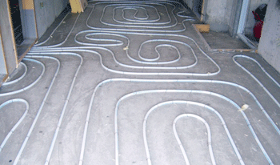

Short & Long Term
Short-term effect — What changed soon after the innovation appeared or spread?
- Upon the invention of Ondol, its extensive use across various fields was notable.
- For instance, in the 15th century, in the Joseon kingdom, King Sejong constructed Ondol in Seonggyungwan University to enhance the infrastructure, especially the healthcare for the students as he said “임금이 성균관 학생들이 습질(濕疾)에 걸리는 일이 많다는 말을 듣고 좌부대언(左副代言) 김자(金赭)에게 가서 살펴 보도록 명하고, 공조(工曹)로 하여금 동재(東齋)와 서재(西齋)를 수리하여 각각 5간(間)을 온돌(溫堗)로 만들어 주도록 하고….”.
- Previously, the students at the university suffered from Edema disease, as this piece of the dynasty’s historical record explained that “성균 학생(成均學生)들이 여러번 부종병(浮腫病)으로 죽게 되어….”
- Hence, the evidence suggests that before the adoption of Ondol in the university, various diseases prevailed.
- Although the Ondol did not directly serve as a vaccine for instant treatment, it contributed to helping students and scholars maintain overall healthy conditions by improving their immunity to disease; furthermore, the fact that the king implemented it in real life implies the high credibility of Ondol.
Long-term effect — What continued, expanded, or influenced later world history?
- The impact of Ondol descended not only to modern Korea, but extended globally, influencing the heating systems of foreign nations.
- In the case study of Bhutan, schools at high elevations struggled to manage students' health problems, as the conventional furnace produced a vast amount of smoke alongside financial problems such as requiring a large amount of highly costly timber as fuel, facing the ultimate paradox in which the system intended to keep students warm exacerbated their health conditions.
- As a solution, schools have adopted Korea’s Ondol to tackle all these problems simultaneously; UNDC described its effect as “Gudeul is fuel-efficient and eco-friendly. Five to six pieces of firewood are enough to keep a room warm for 24 hours. The use of Gudeul is also known to have health benefits and is designed in such a way that no smoke is released indoors.”
- Moreover, the modern effects of Ondol also extend to economic benefits.
- After the modernization of South Korea, Ondol has been implemented in apartments with slight modifications aiming for refinement; Ondol’s prevalence can still be found in modern society since the “apartments are advertised with 온돌 난방관리 (Ondol system fully installed). Even in skyscrapers and modern villas, the floor is still the heart of the home.”
- The evidence implies that Ondol has played a crucial role in the modern heating system of the apartment with the refined heating system; the data highlights that “Despite a global economic slowdown, South Korea's overseas exports of boilers and water heaters increased 4.9% year over year by $478.3 million in 2023, according to data released by the Korea Customs Service on Feb. 26.”

Unintended results— Did the innovation create a problem, inequality, or consequence that was not intended?
- The unintended result of Ondol can be identified during the Joseon dynasty.
- Since there were no official laws or policies regarding the protection of the environment during the 16th to 17th centuries, the Korean ecosystem has been heavily affected by the excessive use of timber.
- The survey from the 17th century reported that “According to the survey, the average household fuel demand for cooking (71%) and heating (29%) was estimated at a total of 7400 kg per household per year—37% forest litter (2739 kg), 30% firewood (2220 kg), 21% grass, and 12% agricultural by-products, such as grain husk [56].”
- The significant usage of fuel by each household is compounded over decades and centuries to culminate in the decline in biodiversity, forest coverage area, and ecosystem quality of the Korean peninsula.